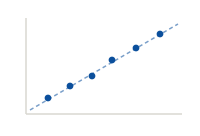

I am a Ph.D. candidate in Electrical & Computer Engineering at the University of Michigan, advised by Prof. Ziyou Song.
My research develops physics-informed machine learning for lithium-ion batteries — predicting lifetime, building lifecycle digital twins, and making AI-for-Science predictions reliable under real-world uncertainty. My background spans mechanical engineering (UBC, NUS) and ECE, which shapes how I work: understand the physics first, then let data do the rest.
News
2026
[Research Highlight] Our paper “Discovery Learning predicts battery cycle life from minimal experiments” was published in Nature as an Editor’s Pick and Cover Feature. (Feb 2026)
[Internship] Started as a Battery R&D Intern at Farasis Energy USA. (2026)
[Honor] Named a finalist for the College of Engineering Marian Sarah Parker Prize, University of Michigan. (2026)
Research
Battery lifetime prediction
Physics-informed and machine-learning models that predict the remaining lifetime of both fresh and aged lithium-ion batteries, supporting lifecycle-aware management, retirement, and reuse decisions.
Battery lifecycle digital twins
Multi-scenario simulations that model battery use from EV service through retirement and second-life applications, evaluating lifetime, techno-economic, and environmental outcomes.
AI-for-Science & uncertainty quantification
Prediction frameworks that integrate physical knowledge with data-efficient learning and calibrated uncertainty, providing reliable predictions and actionable confidence for physical-system modeling.
Featured Publications

Discovery Learning predicts battery cycle life from minimal experiments
Ph.D., Electrical & Computer EngineeringJan 2025 – Aug 2027 (exp.)
University of Michigan · Ann Arbor, MI, USA
Ph.D. (transferred) & M.Sc., Mechanical EngineeringAug 2021 – Dec 2024
National University of Singapore · Singapore
B.A.Sc., Mechanical Engineering, With DistinctionAug 2016 – May 2021
University of British Columbia · Vancouver, BC, Canada
Service & Awards
Peer Review
Nature Communications, Nature Computational Science, Applied Energy, IEEE Transactions on Intelligent Transportation Systems, Green Energy and Intelligent Transportation, IEEE Transactions on Transportation Electrification, Automotive Innovation, IEEE Transactions on Power Electronics, and eTransportation.
Teaching & Mentoring
Graduate Teaching Assistant and Research Mentor — delivered 300+ hours of instruction and mentored 11 undergraduate, graduate, and Ph.D. researchers (University of Michigan; National University of Singapore).
Leadership
Student Leader, Academic Careers in ECE · Graduate Student Council Member · Authorized Signatory & Leadership Team Member, U-M Chinese Women's Basketball Team.
Awards
2026Finalist, College of Engineering Graduate Marian Sarah Parker Prize, University of Michigan.
24–26Excellence in ECE Honor Roll, University of Michigan (2024–25, 2025–26).
17,19Dean's Honour List, University of British Columbia.
2016Outstanding International Student Award, University of British Columbia.
Ventures & Internships
Internships
Farasis Energy USA · Battery R&D Intern2026
Ballard Power Systems · R&D Co-op2018–19
Lock-Block Ltd. · R&D Co-op2019
Ventures
CARDY CRAFT · Co-Founder & Product Development Lead2022–23
Bikeye · Co-Founder & Technical Lead2021–22
Fun Facts
I was a trained pastry chef
I worked as a pastry chef at Miku Vancouver (Michelin Guide Recommended), took Third Prize at the CDE Culinary Competition (NUS, 2024), and ran my own custom-dessert bakery.
I train fight sports
Muay Thai (Level 1), Brazilian Jiu-Jitsu, and skiing — plus competitive basketball and track.